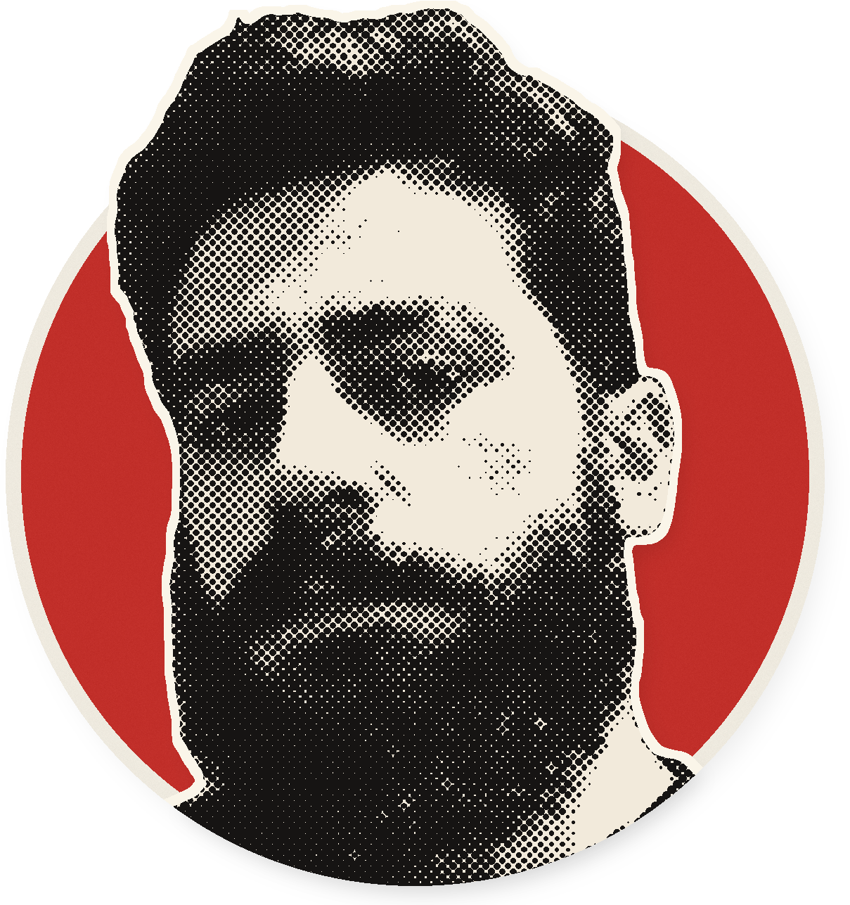

Borderline
de amor da vida
a pior pessoa
em três dias.
DIA
SEGUNDA
DIA
QUINTA
MELHOR
PIOR
SEG
TER
QUA
QUI
VOCÊ
COMO O BORDERLINE TE VÊ
Critério do DSM-5-TR. Sozinho, não fecha diagnóstico.
GATILHO
uma resposta seca
IDEALIZAÇÃO
DESVALORIZAÇÃO
Manda pra quem ficou
sem entender a virada

Dr. Fabio Schmidt, médico, pós-graduado em psiquiatria.
Conteúdo educativo.